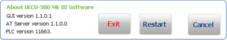

How To – Start the UECU-500 Mark III Throttle
This How To provides the steps required to start the UECU-500 Mark III Throttle.
To Start the UECU-500 Mark III Throttle
This section contains the following procedures:
Powering up the UECU-500 Mark III Throttle
To power up the UECU-500 Mark III Throttle:
- Press the power switch on the back of the throttle controller.
The throttle controller starts and the throttle quadrant starts to boot up. The display software starts automatically after the display computer finishes booting up. The splash screen shows the version of the display software during boot up. During boot up of the throttle controller:
- all output channels are initialized to default states
- analogue outputs reflect the actual mechanical actuator positions
- Actuators hold their current position
- The state of the Engine Select discrete inputs is read and the system is configured for that type of engine. If the engine select bits are all low (0) when the throttle quadrant finishes booting up, the Engine Selection screen is displayed
- Press the power switch on the back of the resolver, RVDT and/or actuator chassis (as required).
- If the throttle controller has previously been configured, the Throttle System reads the current mode from the throttle controller and changes to that screen
- If an engine has not been selected, the Engine Selection screen opens by default when the Throttle System starts up
Restarting the Display Computer GUI Software
To restart the display computer GUI software while the software is still running:
- In the top-left-hand corner of the screen, click the MDS Logo.
The About window is displayed.

- Click Restart.
The display computer GUI software reboots.
Starting the Display Computer GUI Software
To start the display computer GUI after exiting from the software:
- Click the UECU-500 shortcut icon.
 .
.
The display computer GUI software starts.